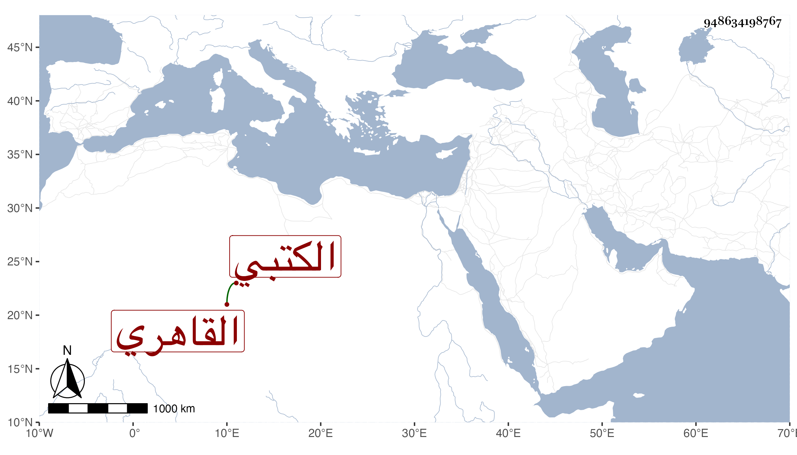

0902Sakhawi.DawLamic.ITO20230111-ara1.EIS1600.948634198767
Biography ID: 948634198767
29
محمد بن محمد بن محمد صدر الدين بن القطب بن الصدر القاهري الكتبي خادم السنباطي والملقب له بمعلم السلطان بحيث صار يعرف بذلك بين كثيرين وعند العامة بلقبه ، حج معه وجاور وتكسب بالتجليد وهو أجود من غيره مع كونه متوسط الأمر في صناعته سمع مني يسيرا اتفاقا .
